Abstract
Unified diffusion editors often rely on a fixed, shared backbone for diverse tasks, suffering from task interference and poor adaptation to heterogeneous demands (e.g., local vs global, semantic vs photometric). Prevalent ControlNet and OmniControl variants combine multiple conditioning signals (e.g., text, mask, reference) via static concatenation or additive adapters that cannot dynamically prioritize or suppress conflicting modalities, leading to artifacts like color bleeding across mask boundaries, identity or style drift, and unpredictable behavior.
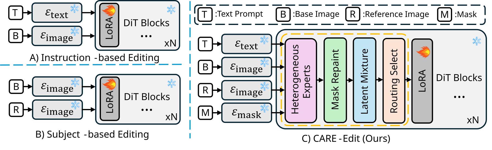
To address this, we propose Condition-Aware Routing of Experts (CARE-Edit) that aligns model computation with specific editing competencies. At its core, a lightweight latent-attention router assigns encoded diffusion tokens to four specialized experts—Text, Mask, Reference, and Base—based on multi-modal conditions and diffusion timesteps: (i) a Mask Repaint module first refines coarse user-defined masks for precise spatial guidance; (ii) the router applies Top-K selection to dynamically allocate computation to the most relevant experts; (iii) a Latent Mixture module subsequently fuses expert outputs, coherently integrating semantic, spatial, and stylistic information.How does it work?
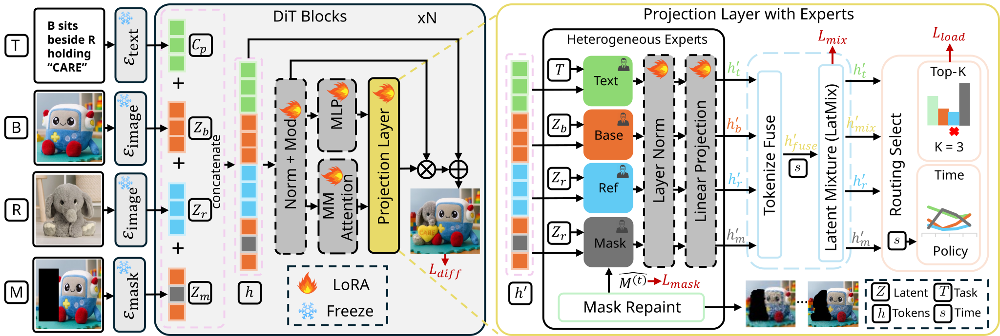
CARE-Edit introduces condition‑aware specialized experts within the frozen DiT backbone. Given multimodal conditions, inputs are tokenized and projected to heterogeneous expert branches. The router assigns confidence scores and selects the Top‑K experts to process each token. Expert outputs are normalized, modulated, and fused through the Latent Mixture module, yielding denoised representation refined by Mask Repaint. Only lightweight adapters, the router, and fusion layers are trainable. This enables CARE-Edit to dynamically allocate computation, mitigates conflicts between heterogeneous conditions (e.g., text vs mask) and enables high-fidelity, coherent edits.
Generalization Capabilities
Contextual Image Editing
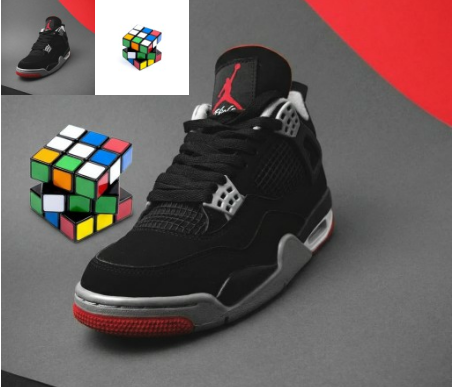
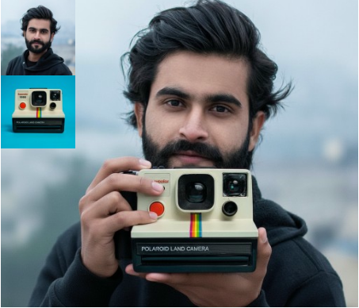
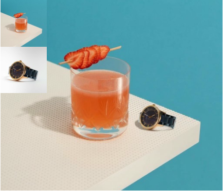
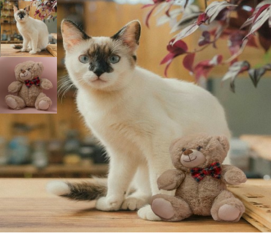
Style Transfer
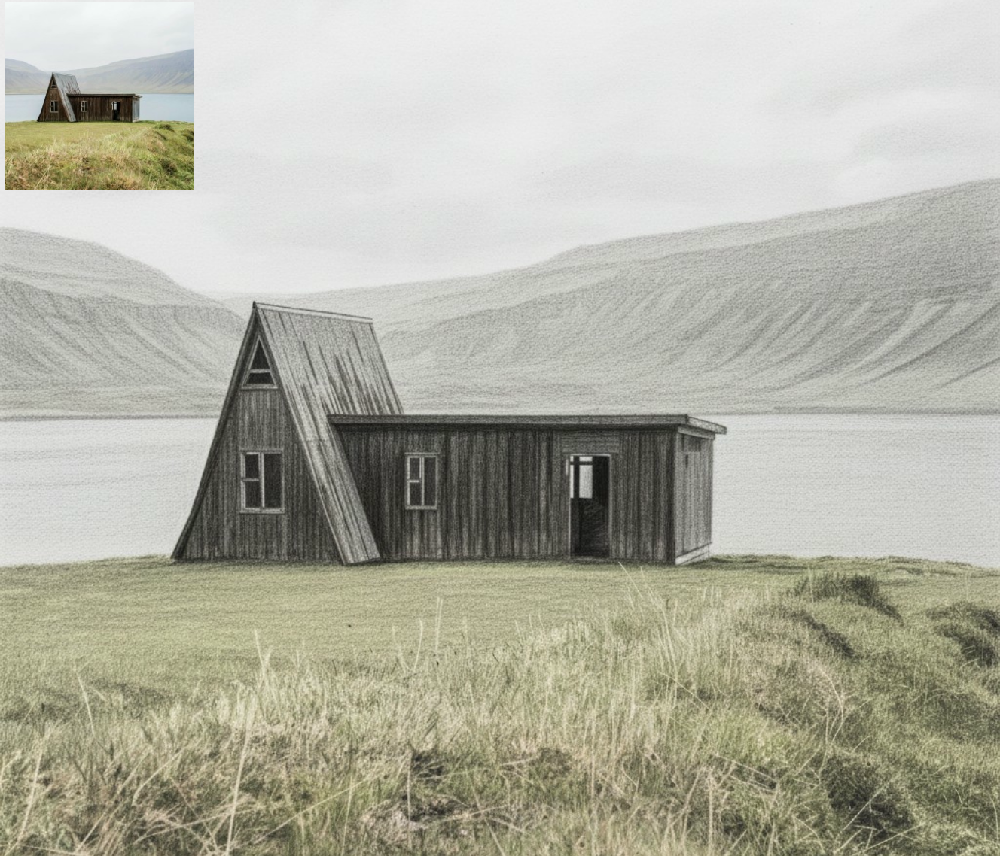
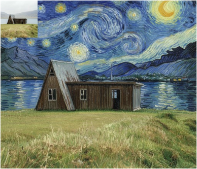
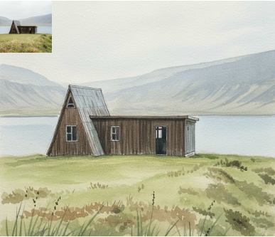
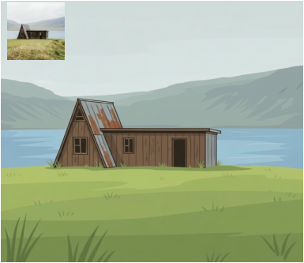
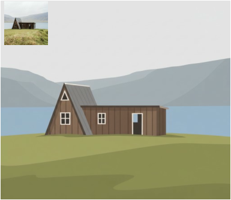
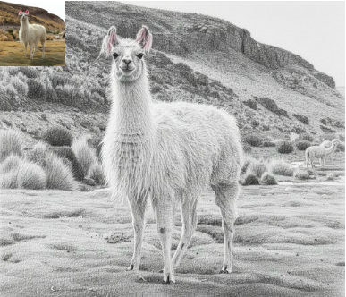
Object Removal
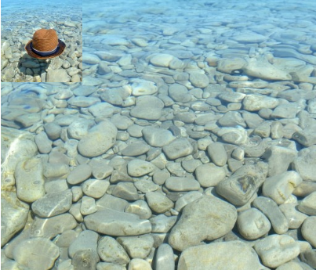
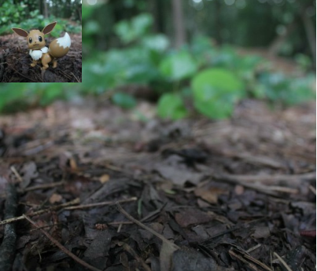
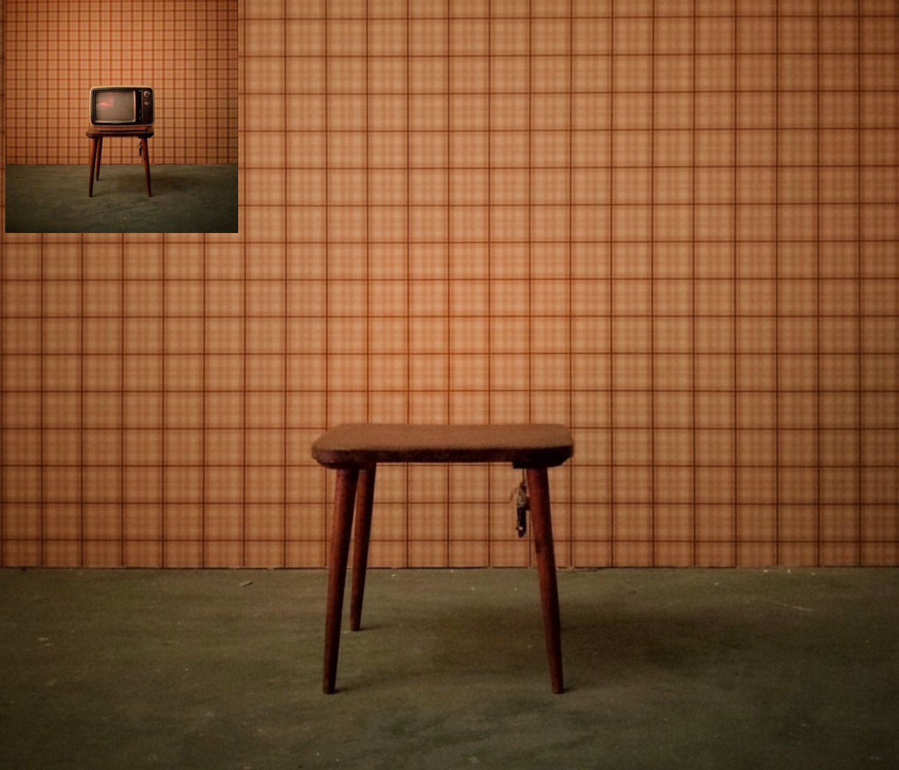
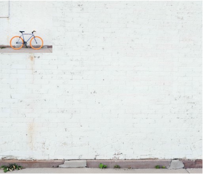
Object Addition & Replacement
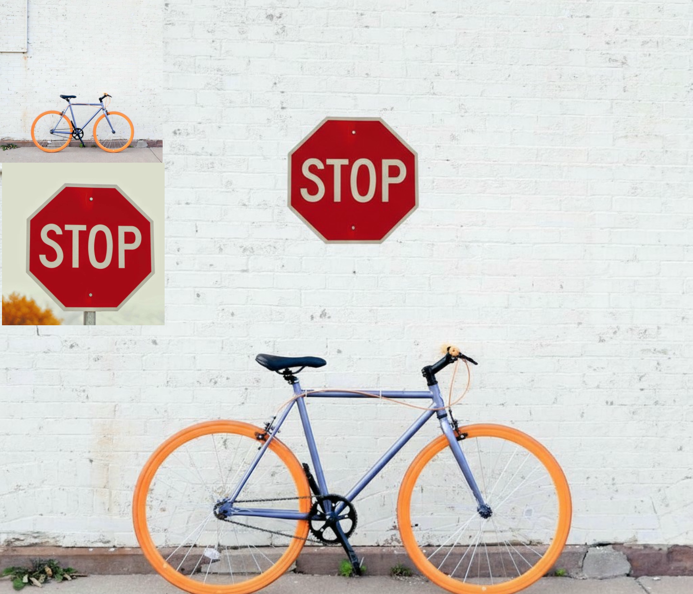
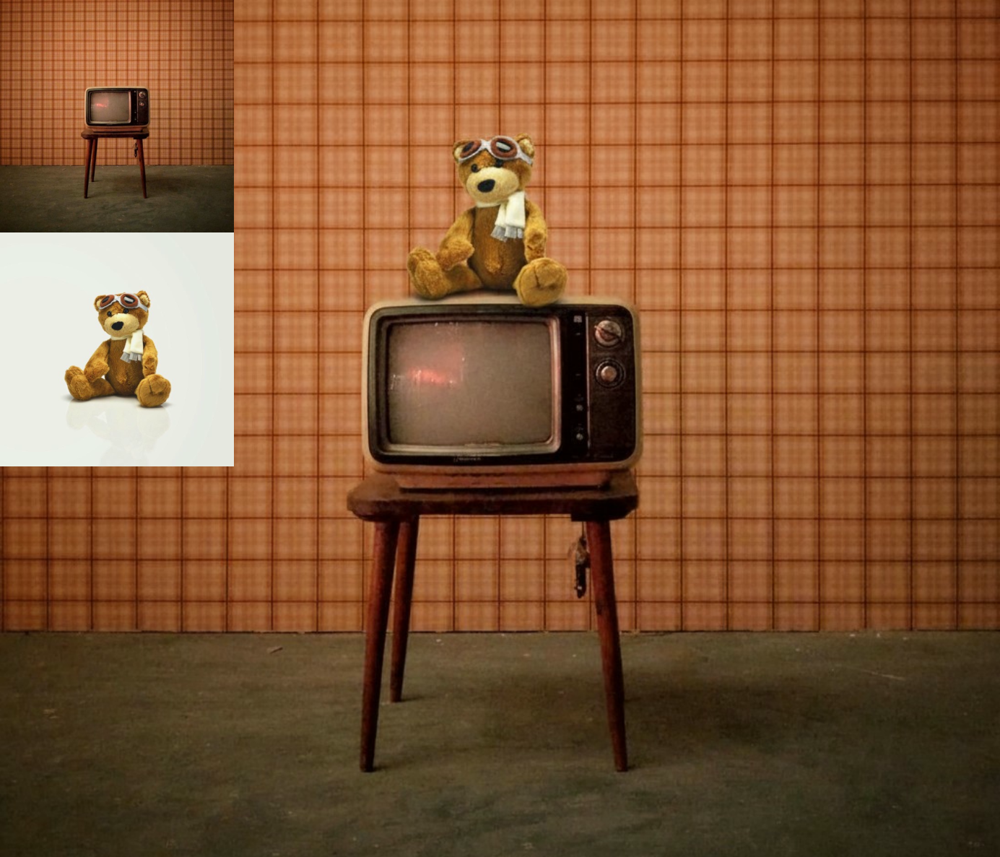
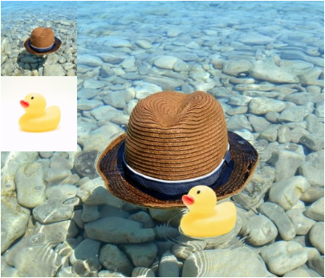
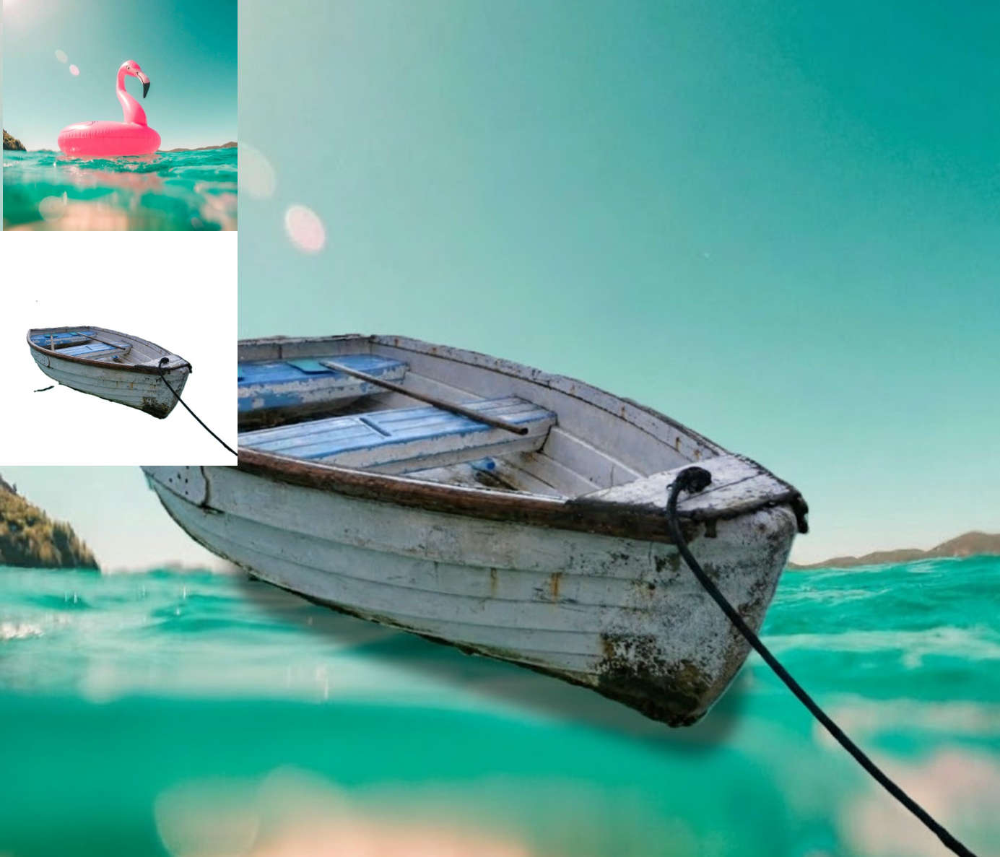
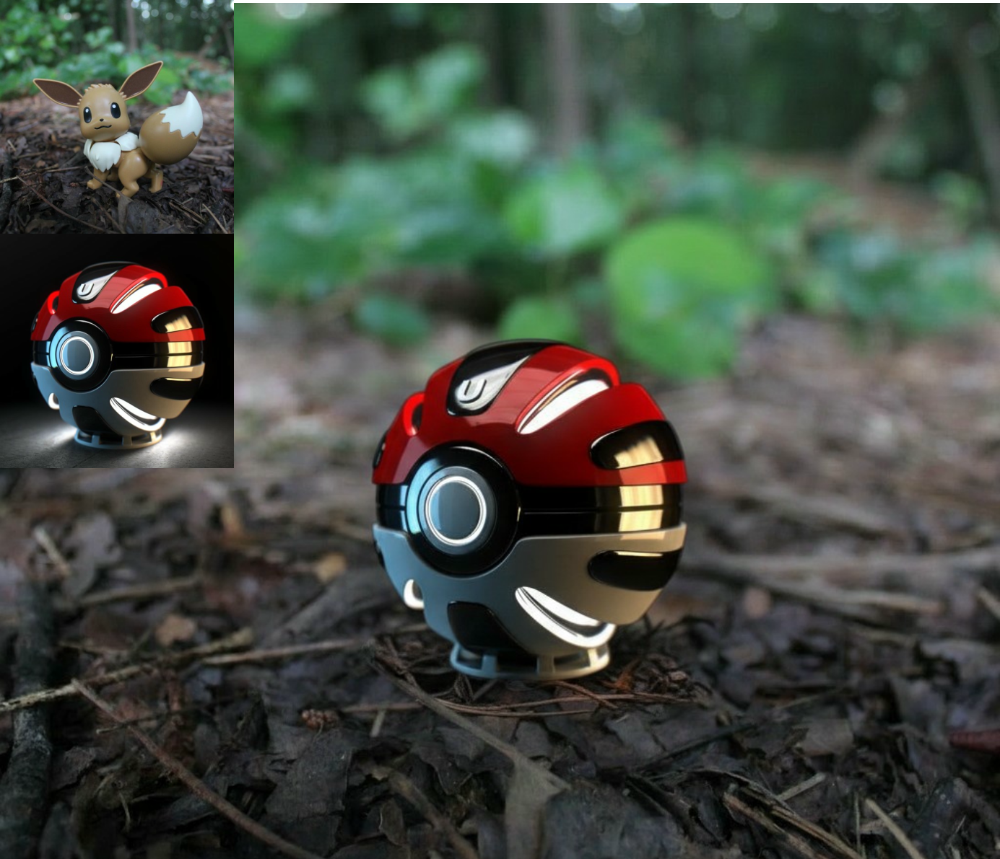
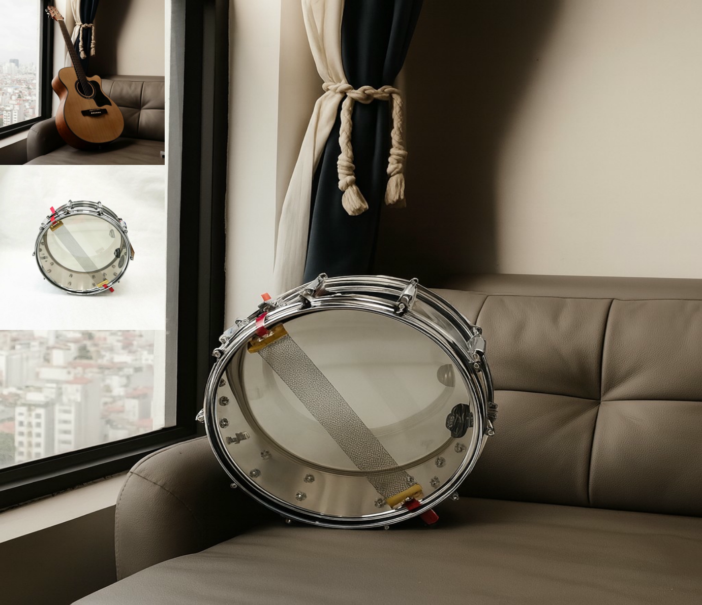
Comparison with State-of-the-Art Methods
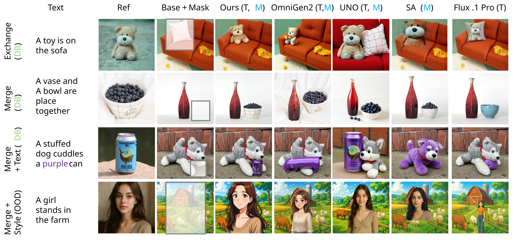

Disclaimer
This project page is prepared for academic presentation of the CARE-Edit framework. All visual examples are for research and illustration purposes only. If any content is considered inappropriate or infringes rights, please contact us, and we will promptly address the issue. We sincerely thank the UNO authors for open-sourcing their project page design.
BibTeX
@InProceedings{wang2026careedit,
title={CARE-Edit: Condition-Aware Routing of Experts for Contextual Image Editing},
author={Yucheng Wang and Zedong Wang and Yuetong Wu and Yue Ma and Dan Xu},
booktitle={The IEEE/CVF Conference on Computer Vision and Pattern Recognition (CVPR)},
year={2026}
}
Template adapted from .